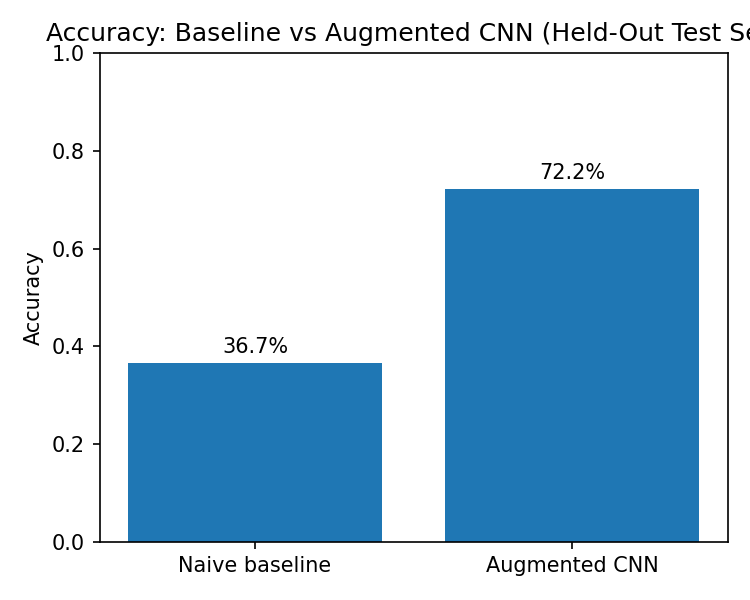
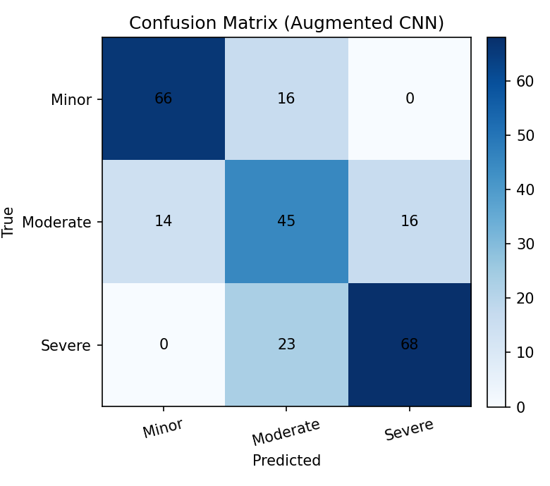
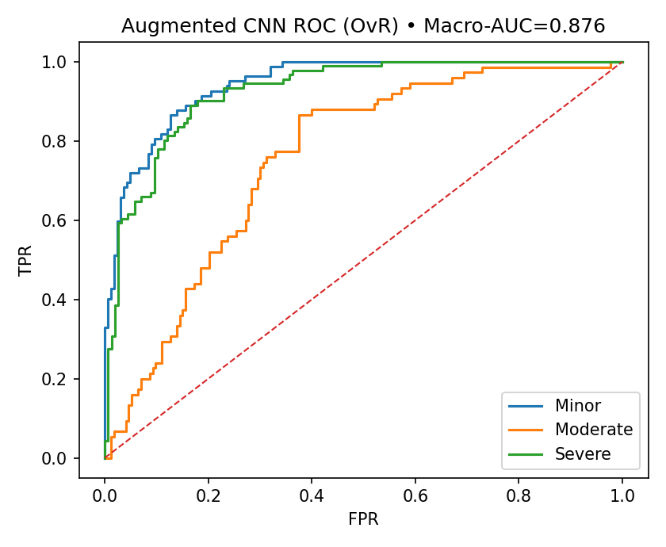
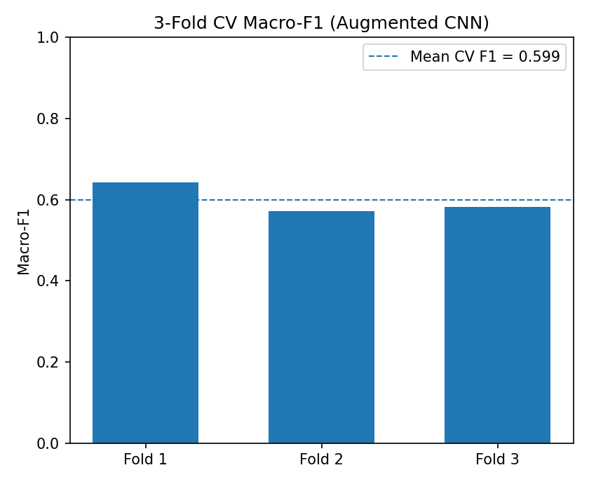

Every image receives metadata, hashes, dimensions, readability status, and split labels.
Exact duplicate hashes across training and held-out test were removed from clean training.
Best model: ImageNet-pretrained ResNet18 with training-time augmentation.
Final evaluation uses held-out test data after validation-based model selection.
Data engineering layer
From folders to queryable quality tables
- Generated image-level manifest with SHA-256, perceptual hash, dimensions, file size, labels, and readability status.
- Stored quality outputs in CSV and SQLite tables for repeatable SQL analysis.
- Flagged exact duplicate leakage and near-duplicate candidates before model training.
- Created clean train and fixed held-out test manifests without deleting source images.
Modeling layer
Validation-first model selection
- Split clean training data into internal train and validation sets with stratified labels.
- Selected saved model weights using internal validation macro-F1 instead of held-out test accuracy.
- Compared baseline, regularized, and augmented ResNet18 variants.
- Reported accuracy, macro-F1, macro-AUC, classification reports, confusion matrices, and cross-validation.
Model comparison
Augmentation improved held-out performance
Model
Val macro-F1
Held-out accuracy
Held-out macro-F1
Macro-AUC
ResNet18 augmented
66.6%
72.2%
71.9%
87.6%
ResNet18 baseline
64.3%
69.0%
69.3%
86.4%
ResNet18 regularized
57.6%
68.5%
67.7%
84.7%
Accuracy lift

Confusion matrix

ROC curves

Cross-validation spread

What changed
Leakage-aware split design
The quality layer found 2 exact duplicate hashes across training and held-out test. The held-out set stayed fixed, while the duplicated training rows were removed from the clean training manifest.
1,383 raw train rows
1,381 clean train rows
248 held-out test rows
How to talk about it
Data scientist story
The project demonstrates data validation, leakage prevention, experiment design, model comparison, and honest reporting. Held-out performance is reported alongside cross-validation to show both upside and variance.
python data_quality/build_dataset_manifest.py
python data_quality/create_clean_split.py